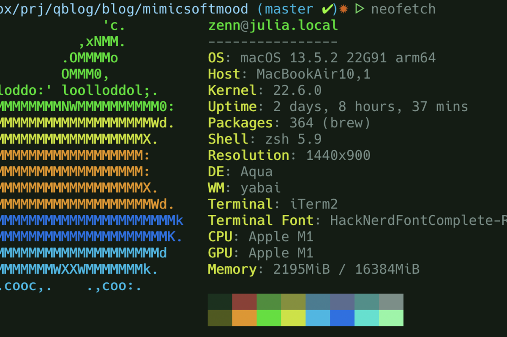
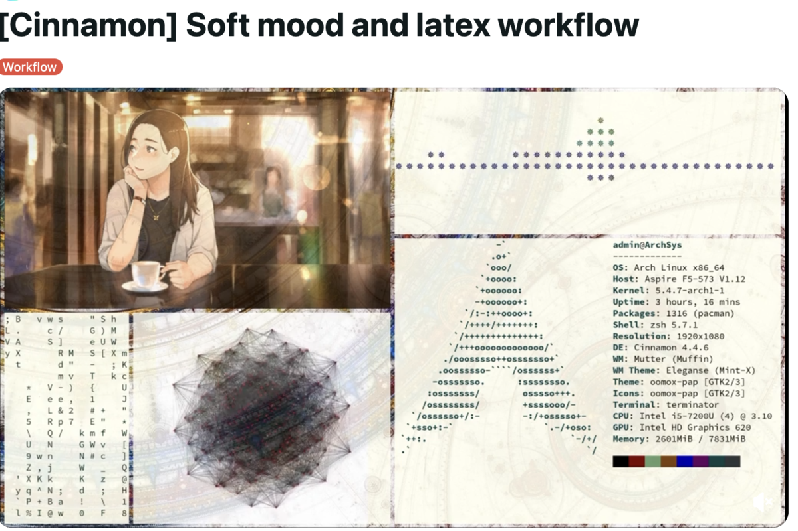

Configure the Command Line for Data Science Development
A opinionated setup for terminal (kitty, ghostty, wezterm), shell (zsh), and productivity tools for everyday data science work

1 Introduction
The configuration presented here is opinionated. It reflects a data science workflow centred on R, Python, Docker, Git, and fuzzy finders. Individual workflows will differ, but the structural decisions (how to organise configuration files, which settings provide measurable benefit, and how to maintain portability) should transfer to other contexts.
Before diving into specific files, it helps to see where each piece sits in the stack. When you type a command on macOS, the keystroke passes through several layers of software before anything happens. The terminal emulator is just one layer – it draws the window, renders text using the GPU, and forwards input downward through a kernel pseudo-terminal device to the shell. The shell interprets the command and calls programs, which in turn make POSIX system calls into the XNU kernel. Understanding this stack clarifies why configuring the terminal emulator and the shell separately makes sense: each layer has a distinct responsibility, and mixing concerns across layers creates fragile setups.
┌─────────────────────────────────────────────┐
│ Terminal Emulator │
│ (Kitty, Ghostty, WezTerm) │
│ rendering, input, fonts, GPU acceleration │
├─────────────────────────────────────────────┤
│ Window Manager (Quartz Compositor) │
│ window compositing, Spaces, display │
│ routing (the WindowServer process) │
├─────────────────────────────────────────────┤
│ PTY (pseudo-terminal) │
│ kernel device pairing the terminal to │
│ the shell process (/dev/ttys*) │
├─────────────────────────────────────────────┤
│ Shell (Zsh) │
│ command interpretation, history, │
│ scripting, job control │
├─────────────────────────────────────────────┤
│ System Calls (POSIX) │
│ open, read, write, fork, exec, ioctl │
├─────────────────────────────────────────────┤
│ macOS Frameworks │
│ AppKit (windows), Metal (GPU rendering), │
│ Core Text (fonts), IOKit (devices) │
├─────────────────────────────────────────────┤
│ Darwin │
│ BSD userland, system libraries, │
│ POSIX-compliant OS layer │
├─────────────────────────────────────────────┤
│ XNU Kernel (Mach + BSD) │
│ process scheduling, memory, filesystem, │
│ networking, device drivers │
├─────────────────────────────────────────────┤
│ Hardware (Apple Silicon) │
│ CPU, GPU, display, keyboard, storage │
└─────────────────────────────────────────────┘This post focuses on the top two configurable layers: kitty.conf controls the terminal emulator and .zshrc controls the shell.
This post covers four configuration files that work together:
- kitty.conf: terminal emulator (rendering, keybindings, appearance)
- .zshrc: shell (environment, history, aliases, functions)
1.1 Motivations
The following pain points motivated this configuration:
1.2 Objectives
- Install and configure Kitty terminal with settings for fonts, colours, performance, and data-science workflows.
- Set up Zsh with a modular
.zshrcthat handles environment variables, history, completion, prompts, plugins, aliases, and custom functions in clearly separated sections. - Configure Git with GitHub CLI authentication, sensible defaults, and useful aliases.
- Set up Readline for consistent vi-mode keybindings across all CLI tools (R, Python, database clients).
- Implement productivity shortcuts (directory jumping, fzf-powered file finding, and safety aliases) that reduce repetitive typing.
- Configure cross-platform loading so the same dotfiles work on macOS and Linux without modification.
Corrections and alternative approaches are welcome.
A well-organized workspace reflects a well-organized configuration: the goal of this entire setup.
2 Prerequisites and Setup
This post assumes you have administrative privileges on a macOS or Linux machine and are comfortable running commands in a terminal. You will need:
- macOS: Homebrew (
brew) installed - Linux: A system package manager (apt, dnf, or pacman)
- Both: Git and Zsh 5.0+
macOS installation:
brew install kittyLinux installation: Restrict attention to Ubuntu.
# Ubuntu/Debian
sudo apt-get install kittyKitty stores its configuration in ~/.config/kitty/kitty.conf. Zsh reads ~/.zshrc at startup. Both files are plain text and can be version-controlled in a dotfiles repository.
3 What is Kitty?
Kitty is a GPU-accelerated terminal emulator written in C and Python. Unlike traditional terminals, it offloads rendering to the GPU, which makes scrolling through large outputs noticeably smoother. Its main appeal for data science work is the built-in graphics protocol: you can display images, plots, and charts directly in the terminal window using kitten icat or backend libraries like matplotlib-backend-kitty.
Think of Kitty as a terminal that understands pictures. Where a standard terminal can only show text, Kitty can render a matplotlib scatter plot inline, right below the command that generated it.
4 Getting Started: Kitty Terminal Configuration
The configuration below presents a complete kitty.conf, built up iteratively. Rather than presenting it as a single block, this section walks through each portion and explains the reasoning behind the settings.
~/.config/kitty/kitty.conf:
4.1 Cursor and Basic Behaviour
cursor_shape block
cursor_blink_interval 0A solid block cursor with no blinking reduces visual noise when reading code. The blinking cursor is distracting during extended work sessions. Some users prefer cursor_shape beam for a thinner insertion point, but the block cursor is easier to locate after shifting attention away from the screen.
4.2 Basic Key Bindings
map cmd+d launch --location=vsplit --cwd=current
map cmd+w close_window
map cmd+shift+w close_tab
map cmd+t new_tab
map cmd+shift+] next_tab
map cmd+shift+[ previous_tab
map cmd+1 goto_tab 1
map cmd+2 goto_tab 2
map cmd+3 goto_tab 3
map cmd+4 goto_tab 4
map cmd+5 goto_tab 5These bindings mirror standard macOS application behaviour. Cmd+D splits the current pane vertically (the --cwd=current flag ensures the new pane starts in the same directory). The tab shortcuts allow jumping directly to a specific tab without cycling through them.
4.3 Clipboard Integration
map cmd+c copy_to_clipboard
map cmd+v paste_from_clipboard
copy_on_select clipboardThe copy_on_select clipboard setting is a significant time-saver. Selecting text with the mouse automatically copies it to the clipboard, eliminating the extra Cmd+C keystroke. This proves useful when copying error messages or code snippets.
4.4 Remote Control and Shell Integration
allow_remote_control yes
listen_on unix:/tmp/kittyRemote control enables scripting Kitty from the command line. For example, window titles can be set programmatically to track different experiments:
kitty @ set-window-title "Model-XGBoost-Experiment-1"This is particularly useful when running multiple training jobs and needing to identify which terminal corresponds to which experiment.
4.5 Font Configuration
font_size 14.0
font_family JetBrainsMono Nerd Font Mono
bold_font JetBrainsMono Nerd Font Mono Extra Bold
bold_italic_font JetBrainsMono Nerd Font Mono Extra Bold ItalicJetBrains Mono renders clearly at small sizes and includes programming ligatures that make operators like != and >= more readable. The Nerd Font variant adds icons used by many command-line tools and prompt themes. At 14pt, the font is comfortable for extended reading without wasting screen space.
4.6 Data Science Key Bindings
map ctrl+shift+i kitten icat
map cmd+shift+d launch --location=hsplit --cwd=current
map f8 launch --location=vsplit --cwd=current
map f10 launch --type=os-window
map f12 next_window
map f9 next_layout
map ctrl+shift+l no_opCtrl+Shift+I launches kitten icat for viewing images directly in the terminal (useful for quick plot inspection). The split bindings (Cmd+Shift+D for horizontal,
4.7 macOS-Specific Settings
macos_option_as_alt yes
macos_quit_when_last_window_closed yes
confirm_os_window_close 1On macOS, macos_option_as_alt allows using Option as the Alt key, which is necessary for many terminal applications that expect Alt+key combinations. The quit and confirm settings prevent accidental closure of important terminal sessions.
4.8 Theme
# BEGIN_KITTY_THEME
# 3024 Night
include current-theme.conf
# END_KITTY_THEMEThis example uses a dark theme (3024 Night) stored in a separate file. Kitty manages themes through its theme system, which makes switching themes easy without editing the main configuration. Run kitty +kitten themes to browse and install themes.
The settings that make the largest difference are copy_on_select clipboard (selecting text copies it automatically, which saves a surprising number of keystrokes per day).
Kitty’s graphics protocol deserves a brief mention. After installing matplotlib-backend-kitty (pip install matplotlib-backend-kitty), the environment variable MPLBACKEND=module://matplotlib-backend-kitty causes matplotlib plots to render inline. For quick image inspection, kitten icat plot.png displays any image directly in the terminal. This proves useful when reviewing generated figures.

System information via neofetch: a quick way to verify terminal font rendering and colour support.
4.9 Zsh Shell Configuration
With Kitty configured, the next layer is the shell. The full .zshrc covers standard concerns (PATH, completion, colour aliases, conda init, NVM loading) that are well documented elsewhere. This section focuses on the features that specifically support data science workflows: secrets management, LaTeX and Docker integration, project navigation, fuzzy file finding, and a guided git commit function.
A design principle throughout: every optional dependency is wrapped in a conditional check ([[ -f ... ]] && source ...). If a tool is not installed, the shell degrades gracefully rather than throwing errors.
~/.zshrc (data-science-relevant excerpts):
4.9.1 Secrets and Build Environment
[[ -f ~/.env ]] && source ~/.env
export DOCKER_BUILDKIT=1
export GITHUB_USER="mygit"
export TEXINPUTS=".:$HOME/shr/images:$HOME/shr:"
export BIBINPUTS=".:$HOME/shr/bibfiles:$HOME/shr"API keys, database credentials, and tokens belong in a separate ~/.env file that is never version-controlled. This one-liner sources it when present and silently skips it otherwise.
DOCKER_BUILDKIT=1 enables Docker’s improved build engine, which provides better layer caching and parallel stage execution. For research compendia that build inside Docker, this can cut image rebuild times substantially. TEXINPUTS and BIBINPUTS tell LaTeX where to find shared images and bibliography files, so multiple manuscripts can reference the same .bib without duplicating it into each project.
4.9.3 History for Long-Running Jobs
HISTFILE="$HOME/.zsh_history"
HISTSIZE=100000
SAVEHIST=100000
setopt SHARE_HISTORY HIST_IGNORE_DUPS
setopt INC_APPEND_HISTORY HIST_VERIFYA 100,000-line history buffer is not excessive for data science work. Model training runs, pipeline executions, and database queries generate commands worth recalling weeks later. The options serve complementary purposes:
SHARE_HISTORYsyncs history across all terminal sessions in real time, so a command run in one tab is immediately available in anotherHIST_IGNORE_DUPSprevents repeatedgit statusormake rcalls from cluttering the historyINC_APPEND_HISTORYwrites each command immediately rather than at session end, preventing loss if a terminal crashes mid-experimentHIST_VERIFYshows the expanded command before executing history substitutions like!!, providing a review step
4.9.4 Git Branch in the Prompt
autoload -Uz vcs_info
precmd() { vcs_info }
zstyle ':vcs_info:git:*' formats '%b '
PROMPT='%F{cyan}%m%f %F{green}%*%f '
PROMPT+='%F{yellow}${${PWD:A}/$HOME/~}%f '
PROMPT+='%F{red}${vcs_info_msg_0_}%f$ '
PROMPT+='%(?:☕ :☔ )'The prompt displays hostname, time, working directory, and the current git branch in red. A coffee cup indicates the previous command succeeded; a rain cloud indicates failure. This is lightweight compared to Oh My Zsh: vcs_info runs in the precmd hook and extracts only the branch name, with no additional git calls. The branch display prevents a common error in research projects – committing to the wrong branch when switching between experiments.

The rhythm of configuration: small decisions compound into a seamless workflow.
4.9.5 Fuzzy Finding with fzf and ripgrep
if type rg &> /dev/null; then
export FZF_DEFAULT_COMMAND='rg --files --hidden'
export FZF_DEFAULT_OPTS='-m --height 50% --border
--reverse'
fiWhen ripgrep is installed, fzf uses it as its file source instead of the default find. The result is faster indexing (ripgrep respects .gitignore) and multi-select support (-m). The --reverse flag places matches near the prompt rather than at the top of the screen, reducing eye movement.
Three functions build on this foundation to create domain-specific file finders:
ff() {
local file
file=$(rg --files "${1:-.}" 2>/dev/null \
| fzf --select-1 --exit-0)
[[ -n "$file" ]] && cd "$(dirname "$file")"
}
pp() {
local pdf
pdf=$(rg --files 2>/dev/null | rg "\.pdf$" | fzf)
[[ -n "$pdf" ]] && zathura "$pdf" &
}
rr() {
local rfile
rfile=$(rg --files 2>/dev/null \
| rg "\.(R|Rmd|qmd)$" | fzf)
[[ -n "$rfile" ]] && vim "$rfile"
}fffinds any file by fuzzy name match andcds to its directory. Useful when you know a filename but not its location in a deeply nested project.ppfinds PDF files (manuscripts, figures, references) and opens them in Zathura. In a research compendium with dozens of rendered outputs, this replaces manual file browsing.rrfinds R, Rmd, or Qmd files and opens them in vim. During analysis work, this is faster than navigating directory trees to locate a specific script.
The pattern is consistent: ripgrep lists files, a regex filter narrows the type, fzf presents an interactive selection, and an action follows. Adding new finders (e.g., for .py or .csv files) requires only copying the pattern and changing the regex.
4.9.6 Guided Git Commits
gz() {
if ! git rev-parse --git-dir > /dev/null 2>&1; then
echo "Error: Not a git repository" >&2
return 1
fi
git status --short
git add .
git diff --cached --stat
git diff --cached | head -30
local summary=$(git diff --cached --name-only \
| head -5 | tr '\n' ', ' | sed 's/,$//')
local file_count=$(git diff --cached --name-only \
| wc -l)
if [[ $file_count -gt 5 ]]; then
summary="$summary and $((file_count - 5)) more"
fi
echo "Commit type:"
echo " 1) feat 2) fix 3) refactor 4) docs"
echo " 5) test 6) chore 7) perf 8) ci"
echo -n "Select (1-8): "
read type_choice
local type
case $type_choice in
1) type="feat" ;; 2) type="fix" ;;
3) type="refactor" ;; 4) type="docs" ;;
5) type="test" ;; 6) type="chore" ;;
7) type="perf" ;; 8) type="ci" ;;
*) type="chore" ;;
esac
echo -n "Scope (optional): "
read scope
echo -n "Description (optional): "
read description
local msg="$type"
[[ -n "$scope" ]] && msg="$msg($scope)"
msg="$msg: $summary"
[[ -n "$description" ]] && msg="$msg"$'\n\n'"$description"
git commit -m "$msg"
[[ $? -ne 0 ]] && return 1
git push
}Research projects accumulate commits quickly – adjusting model parameters, updating figures, editing manuscript text. Without discipline, commit history becomes a wall of ‘update’ messages that are useless for understanding what changed and why.
gz enforces conventional commit formatting by walking through each step interactively: stage all changes, display a summary, prompt for a commit type (feat, fix, docs, etc.) and optional scope, then generate a structured message and push. The function is opinionated about workflow (it stages everything and pushes immediately), which suits solo research projects where the priority is keeping the remote in sync. For collaborative work with pull requests, the auto-push behaviour would need removal.

Configuration as architecture, with each layer built deliberately upon the one below.
4.9.7 Research Compendium Navigation (ZZCOLLAB)
_zzcollab_root() {
local dir="$PWD"
while [[ "$dir" != "/" ]]; do
if [[ -f "$dir/DESCRIPTION" ]] \
|| [[ -f "$dir/.zzcollab_project" ]]; then
echo "$dir"
return 0
fi
dir="$(dirname "$dir")"
done
return 1
}
a() { local r=$(_zzcollab_root)
[[ -n "$r" ]] && cd "$r/analysis"; }
s() { local r=$(_zzcollab_root)
[[ -n "$r" ]] && cd "$r/analysis/scripts"; }
p() { local r=$(_zzcollab_root)
[[ -n "$r" ]] && cd "$r/analysis/report"; }
f() { local r=$(_zzcollab_root)
[[ -n "$r" ]] && cd "$r/analysis/figures"; }
r() { local r=$(_zzcollab_root)
[[ -n "$r" ]] && cd "$r/R"; }
0() { local r=$(_zzcollab_root)
[[ -n "$r" ]] && cd "$r"; }
mr() {
local root=$(_zzcollab_root)
[[ -z "$root" ]] && return 1
[[ ! -f "$root/Makefile" ]] && return 1
make -C "$root" "${@:-r}"
}These functions address a specific friction point in research compendium projects: navigating a standardised directory structure from any subdirectory. The _zzcollab_root helper walks up the directory tree looking for a DESCRIPTION file (standard R package marker) or a .zzcollab_project marker. Once found, single-letter commands jump to standard locations:
0– project roota–analysis/s–analysis/scripts/p–analysis/report/(the manuscript or blog post)f–analysis/figures/r–R/(reusable functions)
The mr function runs Make targets from any subdirectory, defaulting to the r target (which typically enters the Docker container). This means you can type mr from deep inside analysis/scripts/ and it behaves as if you ran make r at the project root.
Also configured but omitted here for brevity: platform-specific PATH setup via $OSTYPE checks, completion system caching, plugin loading (autojump, zsh-autosuggestions, zsh-syntax-highlighting) with conditional guards, ls/grep colour aliases, application shortcuts, directory stack navigation, NVM loading, and conda initialisation. These are standard shell configuration; the Zsh documentation and Configuring Zsh Without Dependencies cover them thoroughly.

4.10 Git Configuration
Git is central to the workflow described above: the gz function, the branch display in the prompt, and general version control. The configuration lives in ~/.gitconfig.
~/.gitconfig:
4.10.1 User Identity and Defaults
[init]
defaultBranch = main
[user]
name = Your Name
email = user@example.com
[core]
editor = nvim
excludesfile = ~/.gitignore_globalThe defaultBranch setting ensures new repositories start with main rather than master. The excludesfile points to a global gitignore that applies to all repositories, useful for editor backup files, OS metadata like .DS_Store, and other files that should never be committed regardless of project.
4.10.2 Pull and Merge Behaviour
[pull]
rebase = false
[commit]
quiet = trueThe setting rebase = false preserves merge commits when pulling. Some teams prefer rebase = true for a linear history, but merge commits are useful for understanding when changes were integrated. The quiet = true setting suppresses the commit summary output, which is redundant given the gz function already shows what was committed.
4.10.3 GitHub Authentication
[credential "https://github.com"]
helper =
helper = !/opt/homebrew/bin/gh auth git-credential
[credential "https://gist.github.com"]
helper =
helper = !/opt/homebrew/bin/gh auth git-credentialRather than managing SSH keys or personal access tokens manually, authentication is delegated to the GitHub CLI (gh). After running gh auth login once, Git uses gh as a credential helper for all GitHub operations. The empty helper = line clears any previously configured helpers before adding the gh helper.
4.10.4 Git LFS
[filter "lfs"]
clean = git-lfs clean -- %f
smudge = git-lfs smudge -- %f
process = git-lfs filter-process
required = trueGit LFS (Large File Storage) handles binary files like datasets, images, and model weights. This block is added automatically by git lfs install. Files matching patterns in .gitattributes are stored externally and replaced with pointers in the repository, keeping the repository size manageable.
4.10.5 Useful Additions
The configuration above is minimal. Consider adding:
[alias]
st = status --short
co = checkout
br = branch
lg = log --oneline --graph --decorate -20
[diff]
colorMoved = default
[merge]
conflictstyle = diff3The lg alias provides a compact visual history. The colorMoved setting highlights moved lines in diffs (useful when refactoring). The diff3 conflict style shows the common ancestor in merge conflicts, making resolution easier.

4.11 Readline Configuration
Many command-line tools (including R, Python’s REPL, and various database clients) use the GNU Readline library for line editing. By default, Readline uses Emacs-style keybindings, which conflicts with the vi mode configured in Zsh. The .inputrc file brings consistency across all Readline-based tools.
~/.inputrc:
set editing-mode vi
set show-mode-in-prompt on
set vi-ins-mode-string \1\e[6 q\2
set vi-cmd-mode-string \1\e[2 q\2The editing-mode vi setting enables vi keybindings globally. The mode indicator settings change the cursor shape to signal which mode you are in: a thin bar in insert mode, a solid block in command mode. This matches the behaviour of many modern terminal-based editors.
4.11.1 Enhanced Completion
set completion-ignore-case on
set show-all-if-ambiguous on
set colored-stats on
set mark-symlinked-directories onCase-insensitive completion reduces friction when working with mixed-case filenames. The show-all-if-ambiguous setting displays all matches immediately rather than requiring a second Tab press. Coloured stats distinguish files from directories in completion lists, and symlinked directories get a trailing slash for clarity.
4.11.3 Bell and Display
set bell-style none
set enable-bracketed-paste onDisabling the terminal bell removes a disruptive auditory notification. The bracketed paste setting prevents pasted text from being interpreted as commands until Enter is pressed, which is a security feature when pasting from untrusted sources.
With these four configuration files (kitty.conf, .zshrc, .gitconfig, and .inputrc), the command-line environment becomes consistent and efficient across all tools.
5 Putting It Together: A Typical Session
With the configuration in place, a typical work session proceeds as follows:
- Open Kitty and type
prj(thanks tocdpath, this expands to~/Dropbox/prj) - Type
j analysisand autojump navigates to the most recent analysis project - Type
0to jump to the project root, thensfor scripts - Type
rr, fzf displays all R files, select one and it opens in vim - After editing, type
gzto stage, commit with a conventional message, and push - To check a plot,
ppfinds and opens the PDF
The individual pieces (cdpath, autojump, fzf functions, the git workflow) each save a few seconds. Over hundreds of commands per day, the cumulative effect is significant.
5.1 Daily Workflow Quick Reference
| Command / Alias | Action |
|---|---|
prj |
Jump to ~/Dropbox/prj via cdpath |
j <partial> |
Autojump to most-visited matching directory |
0 |
Jump to project root (git top-level) |
s / d / f |
Navigate to scripts/ / data/ / figures/ |
rr |
Fuzzy-find and open an R file in vim |
pp |
Fuzzy-find and open a PDF |
gz |
Stage, commit, and push in one command |
ga / gs / gd |
Git add / status / diff aliases |
Ctrl-T |
Fzf file search in current directory |
Ctrl-R |
Fzf reverse history search |
6 Checking Our Work: Verifying the Configuration
After copying these configuration files into place, it is worth verifying that everything loaded correctly.
Check Kitty settings:
kitty --version
kitty +kitten themes --listThe first command confirms Kitty is installed. The second lists available themes, which verifies that the Kitty kitten system is working.
Check Zsh and plugins:
zsh --version
echo $SHELL
which autojump 2>/dev/null && echo "autojump: loaded" \
|| echo "autojump: not found"
type fzf 2>/dev/null && echo "fzf: loaded" \
|| echo "fzf: not found"Verify the prompt shows git information:
cd /path/to/any/git/repo
# The prompt should display the branch name in redTest safety aliases:
rm test.txt
# Expected output: "This is not the command you are
# looking for."Check Git configuration:
git config --list --show-origin | head -20
git config user.name
git config user.email
gh auth statusThe first command shows all settings and where they come from (useful for debugging). The gh auth status confirms GitHub CLI authentication is working.
Check Readline (in R or Python):
R --quiet
# Press Escape, then 'k' to move up in history (vi command mode)
# Press 'i' to return to insert mode
# Cursor should change shape between modesIf the cursor does not change shape, verify that .inputrc exists and that the terminal supports cursor shape changes (Kitty does; some older terminals do not).
If any plugin fails to load, the [[ -f ... ]] && source ... guards mean Zsh will continue without error. This is deliberate: a working shell with a missing plugin is preferable to a broken shell.
6.1 Things to Watch Out For
Duplicate key bindings. Defining the same Kitty keybinding in both basic and data-science sections is a common mistake. Kitty uses the last definition, so the earlier one is silently ignored. Merging the configuration into one file avoids this.
Plugin startup cost. Loading
zsh-syntax-highlighting,zsh-autosuggestions, andautojumpadds roughly 100-200ms to shell startup. If lag appears when opening new terminals, profile withzsh -xvand consider lazy-loading.cdpathcollisions. If two directories incdpathcontain subdirectories with the same name, Zsh picks the first match. This can cause unexpected navigation to the wrong project.Conda and PATH pollution. The conda initialisation block modifies
$PATHevery time a shell starts. Opening many terminal tabs can cause$PATHto accumulate duplicate entries. Check withecho $PATH | tr ':' '\n' | sort | uniq -d.Font fallback on Linux. FiraCode Nerd Font Mono must be installed system-wide on Linux for Kitty to find it. If prompt icons render as boxes, run
fc-list | grep -i firato verify the font is visible to fontconfig.
7 Uninstall / Rollback
To revert to default terminal and shell configuration:
# 1. Restore default shell prompt (remove custom PROMPT lines)
cp ~/.zshrc ~/.zshrc.backup
grep -v 'PROMPT=' ~/.zshrc > ~/.zshrc.tmp && mv ~/.zshrc.tmp ~/.zshrc
# 2. Remove Kitty configuration
rm -i ~/.config/kitty/kitty.conf
# 3. Remove readline customisation
rm -i ~/.inputrc
# 4. Uninstall Kitty (if switching terminals)
brew uninstall kitty # macOS
sudo apt remove kitty # Ubuntu / Debian
# 5. Remove plugins (optional)
brew uninstall autojump fzf # macOSThe original .zshrc.backup allows full recovery if anything goes wrong.

The calm focus of a well-tuned workspace: what a thoughtfully configured terminal makes possible.
8 What Did We Learn?
8.1 Lessons Learnt
Conceptual Understanding:
- A terminal configuration is a layered system: the emulator (Kitty) handles rendering and input; the shell (Zsh) handles commands, history, and scripting. Configuring them separately keeps each layer clean.
- Scrollback and performance settings are not cosmetic. A 50,000-line buffer and zero input delay make a tangible difference when reviewing long model outputs.
- Directory navigation is a solved problem in Zsh. Between
cdpath,auto_pushd, andautojump, there is no reason to type full paths. - The prompt is an information display, not decoration. Showing git branch and exit status prevents real errors.
Technical Skills:
- Using
vcs_infofor lightweight git integration in the prompt avoids the overhead of Oh My Zsh. - Cross-platform plugin loading via
$OSTYPEchecks allows sharing one.zshrcbetween macOS and Linux. - Combining
ripgrepwithfzffor file finding (thepp,rr, andfffunctions) can replace several GUI tools. - Kitty’s remote control API (
kitty @) opens possibilities for scripting terminal layouts, useful when setting up experiment monitoring.
Gotchas and Pitfalls:
- Overriding
rmwith a safety alias means scripts that callrmwill also fail. Usecommand rmor/bin/rmin scripts when you genuinely need to delete. setopt SHARE_HISTORYshares history across all terminal sessions in real time, which can be disorienting if you are not expecting it.- The
_load_pluginhelper function defined in section 6 is currently unused because inline conditionals are more readable for three plugins. It would become useful with more plugins. - Kitty’s
background_imagesetting accepts an absolute path. If the image file moves, Kitty starts with a black background and no error message.
8.2 Limitations
- This configuration is tested only on macOS (Sonoma) and Ubuntu 22.04. Other distributions may require different plugin paths or package names.
- The
.zshrcincludes hardcoded paths (e.g.,/opt/miniconda3,/home/z/.autojump) that will not work on other machines without editing. - The Kitty configuration references a background image at an absolute path that is specific to the original machine.
- Plugin loading adds startup latency. For remote servers where shell startup time matters (e.g., inside Docker containers), a stripped-down
.zshrcwould be more appropriate. - The
cdpathapproach does not scale well to deeply nested project structures with many similarly-named subdirectories. - No automated testing or linting is applied to these configuration files. A typo in
.zshrcis only caught when the shell starts.
8.3 Opportunities for Improvement
- Store the configuration in a dotfiles repository with a symlink-based installer (see the companion post on GitHub dotfiles).
- Replace hardcoded paths with environment variables or auto-detection logic to improve portability.
- Add lazy-loading for plugins to reduce shell startup time below 50ms.
- Integrate with a tiling window manager (Rectangle on macOS, i3/Sway on Linux) to automate window positioning alongside terminal splits.
- Add Karabiner-Elements (macOS) or custom keybindings (Linux) for a global hotkey to summon Kitty instantly.
- Write a shell function that profiles
.zshrcstartup time and identifies slow sections automatically.
The destination: a command line that works with the user, not against.
9 Wrapping Up
Configuring a terminal is not glamorous work, but it compounds. Every alias that saves two seconds, every prompt element that prevents a mistake, and every navigation shortcut that avoids a full path adds up across thousands of commands per week.
The most valuable aspect is the organisational discipline: numbered sections in .zshrc, grouped settings in kitty.conf, and consistent vi-mode keybindings across all tools via .inputrc. When something breaks, the location is obvious. When adding something new, the placement is clear.
For those starting from a default terminal setup, focusing on four things first is recommended: a Nerd Font for icon support, cdpath for directory navigation, fzf for fuzzy file finding, and .inputrc for vi-mode consistency. These changes make the largest difference in daily workflows.
Main takeaways:
- A 50,000-line scrollback buffer prevents losing model training output.
cdpathandauto_pushdeliminate mostcd ../../..chains.- Replacing
rmwith a trash alias prevents accidental data loss. - Cross-platform logic via
$OSTYPEkeeps dotfiles working on both macOS and Linux. - GitHub CLI authentication (
gh auth) simplifies credential management. - Readline configuration ensures vi-mode works in R, Python, and other CLI tools, not just Zsh.
10 See Also
Related posts:
- Creating a GitHub Dotfiles Repository for Configuration Management: how to version-control the files described in this post
- Setting Up Neovim for Data Science Development: the editor layer that sits on top of this terminal configuration
Key resources:
- Kitty Terminal Documentation: the official reference for all configuration options
- Zsh Documentation: official manual covering options, completion, and scripting
- Git Configuration: official guide to
.gitconfigsettings - GitHub CLI: the
ghtool used for authentication in this configuration - GNU Readline: official documentation for
.inputrcsettings - FZF: the fuzzy finder used throughout this configuration
- Ripgrep: the search tool that powers
fzffile finding here - Configuring Zsh Without Dependencies: an excellent guide to building a Zsh config from scratch
11 Reproducibility
Environment requirements:
- macOS 10.15+ or Linux (Ubuntu 18.04+, Fedora 30+)
- Zsh 5.0+, Git, Homebrew (macOS)
- FiraCode Nerd Font Mono
- Optional:
fzf,ripgrep,eza,autojump,trash-cli
Configuration file locations:
- Kitty:
~/.config/kitty/kitty.conf - Zsh:
~/.zshrc - Git:
~/.gitconfig - Readline:
~/.inputrc - Environment secrets:
~/.env(not version-controlled)
Version checks:
zsh --version
kitty --version
git --version
gh --version # GitHub CLI
brew --version # macOS only
fzf --version
rg --version12 Let’s Connect
Have questions, suggestions, or spot an error? Let me know.
- GitHub: rgt47
- Twitter/X: @rgt47
- LinkedIn: Ronald Glenn Thomas
- Email: Contact form
I would enjoy hearing from you if:
- You spot an error or a better approach to any of the code in this post.
- You have suggestions for topics you would like to see covered.
- You want to discuss R programming, data science, or reproducible research.
- You have questions about anything in this tutorial.
- You just want to say hello and connect.